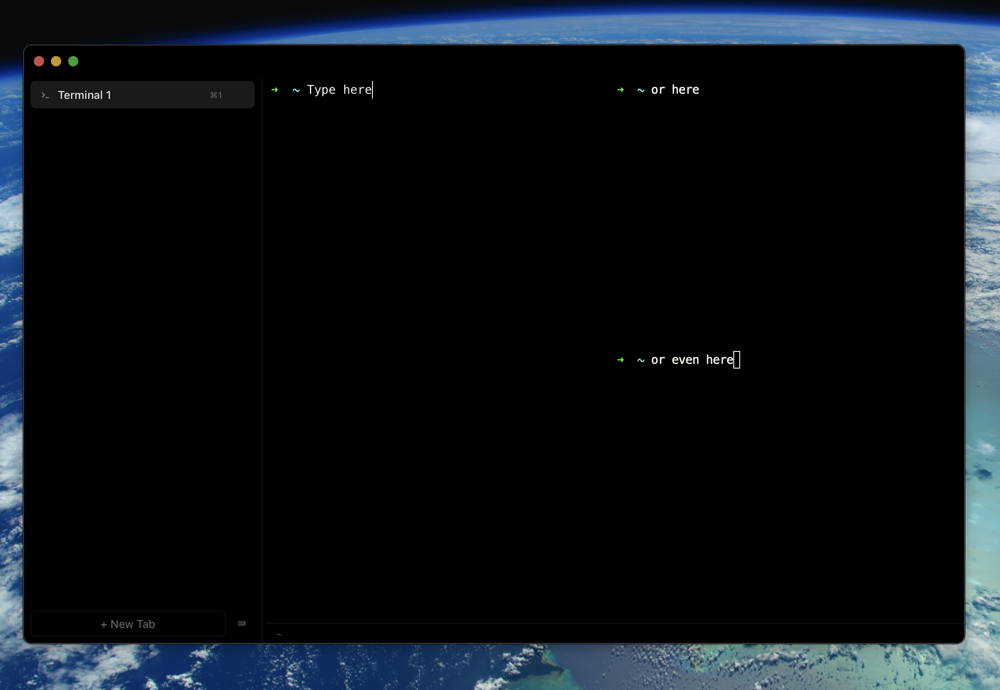

Run multiple AI agents at once and keep track of what each one is doing. Clawterm shows you which agent needs input, which errored, and which finished.

A terminal that knows you're running agents, not just shell commands.
Each tab shows its session state — idle, running, waiting, error — so you don't have to click through them.
Horizontal and vertical splits within a single tab. Run agents side by side.
Desktop alerts when an agent needs input or a command finishes.
Rust PTY backend, WebGL rendering, no Electron.
xattr -cr /Applications/Clawterm.appOr install via script:
The xattr step is needed because we're awaiting Apple Developer Program approval. Once approved, macOS will trust the app out of the box.